|
SPANISH GUINEA
HISTORY AND PEOPLE
Spanish Guinea was located in western Africa, bordering on
the Gulf of Guinea. Its capital was in Santa Isabel. The island of Bioko was claimed by (and until 1972 named
after) Fern·o do Po, a Portuguese navigator, in 1472. During the 17th cent.
the mainland·s indigenous pygmy peoples were displaced by other groups,
principally the Fang, who now inhabit the area. In 1778, Portugal ceded the
islands, and also the commercial rights to a part of the African coast that
included present-day Rio Muni, to the Spanish. Hoping to export Africans as
slaves to their American possessions, the Spanish sent settlers to the
islands, but they died of yellow fever, and by 1781 the region was abandoned
by the Europeans.
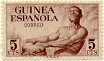 |
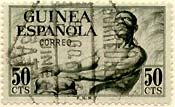 |
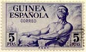 |
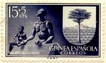 |
From 1827 to 1843 the British leased bases at Malabo (then called Port
Clarence) and San Carlos from Spain for use by their antislavery patrols,
and some freed slaves were settled on Bioko (then called Fernando Po). In
1844 the Spanish reacquired Bioko and began to occupy it. In 1879, a Cuban
penal settlement was established there, and some of the convicts remained on
the island after being released from prison. The general region of Rio Muni
was awarded to Spain at the Conference of Berlin in 1885, and its boundaries
were defined precisely in a treaty with France in 1900. The islands and Rio
Muni were grouped together as the colony of Spanish Guinea.
|
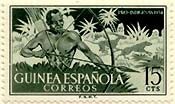 |
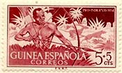 |
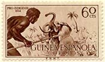 |
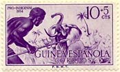 |
Under the Spanish, economic development was largely confined
to Bioko, although some measures were taken in R·o Muni beginning in the
1940s. By 1960, about 6,000 Europeans (mostly Spanish) were living in the
colony, and they controlled the production of cocoa and timber.
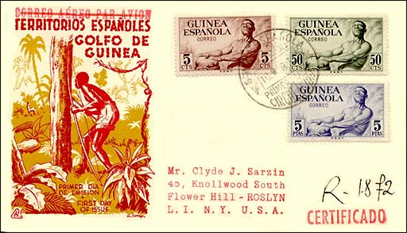
In 1959 the colony was reorganized into two overseas
provinces of Spain, each under a governor. In a further move to assimilate
the region to Spain, three Hispano-Guineans were elected to the Spanish
Cortes in 1960. However, nationalists were not satisfied with assimilation
and demanded independence.
|
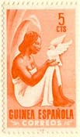 |
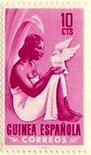 |
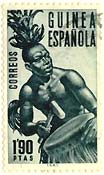 |
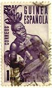 |
In 1963, Spain granted the country (renamed Equatorial
Guinea) a limited amount of autonomy, and on Oct. 12, 1968, it received
complete independence. (After:
http://www.bartleby.com/65/eq/EquatrGu.html)
|
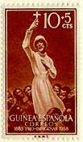 |
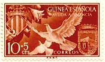 |
 |
|
The stamps and the FDC
shown above were issued between 1952 and 1958. They show drummers, hunters,
a women with a dove, arms, and a preaching missionary and
a crucifix (Scott B 49, 75th anniversary of Catholic Missions in Spanish
Guinea).
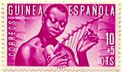 |
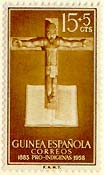 |
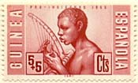 |
The first (84) stamps stamps of the
Spanish Guinea were valid only in the continental area
later called Rio Muni. From 1909 to 1960, Spanish Guinea also included
Fernando Po, Elobey, Annobon and Corisco. The stamps of Spanish Guinea were
succeeded by those of Fernando Po and Rio Muni in 1960. Fernando Po and Rio
Muni united in 1968 to become the Republic of Equatorial Guinea.
Credits: many thanks to Tracy Barber
(USA) for scans of entire sets.
|